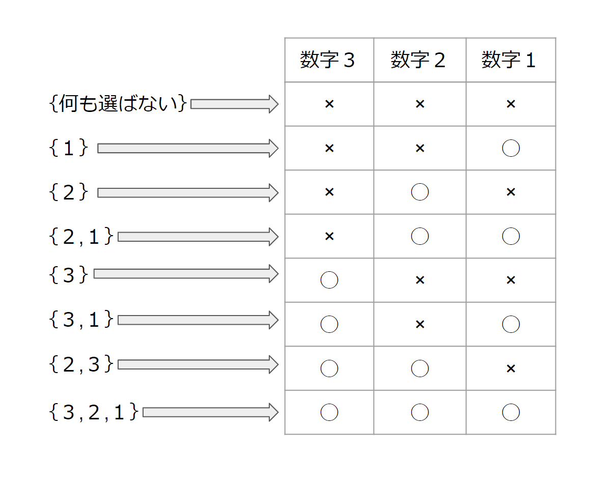
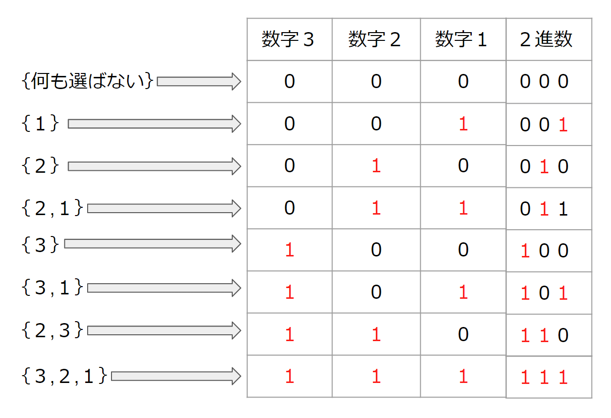

bit全探索について理解する。
概要
2^N通りあるN 個のものから、いくつか選んだ組合せを全探索するアルゴリズム
bit全探索について
上記の通り、2^N通りあるN 個のものから、いくつか選んだ組合せを全探索するアルゴリズムです。
簡単な考え方を下記に記載します。
具体例
整数1,2,3が与えられる場合、その中からいくつかを選ぶ方法を列挙する場合は8通りあると考えられます。
ここでなぜ8通りなのか考えてみます。各数字3,2,1についてそれぞれが選ぶ・選ばないの選択肢を持っています。 つまり各々の整数に対して2つの選択肢があることから、今回の3つの整数の選択肢は2^3通りであると考えられます。 n個のものから、いくつか選んだ組み合わせを探すなら、全探索でよいのではないかと考える方がいるかもしれませんが、そうした時にn重のfor文が必要になり、コードが大変なことになります。
これらをbit全探索で実装すると少ないコードで完結することができるようになります。それではbit全探索の実装をしていきます。
手順
1, for文の条件を記述するために、いくつか選ぶ方法を2進数で表し、for文の条件式で2進数を10進数に戻し条件を記述する。
2, if文で10進数から2進数に変換し、各桁に1が立っているか判定して処理を実行する。
実装
まず手順1の、いくつか選ぶ方法を2進数で表します。つまり選んだ場合は"1"、選ばない場合を"0"として2進数を10進数に変換します。
そして、その2進数を10進数に変換します。

この時に全てを選んだ時の2進数"111"の10進数が7になっていることに注目します。0~7の8個、つまり0から2^3-1の範囲をforの条件式に指定することができるようになります。
そうすることで全てのパターンを列挙できます。
forの条件式をc++で記述していきます。
コードのbitは10進数を表しており条件式の"1<<3"は2進数の1をいくつかを、選ぶ対象である。1~3の3つの整数を3個分右ビットシフトしています。
"<<の"シフト演算子についてわからない方は参照してください。
for文の条件式内で"bit < (1 << 3);"とする理由は、ビット1を要素数3個分左シフトすると2進数は"1000"になります。これを10進数で表すと8に変換され条件式が10進数を 表すint型変数bitが0<8の7回回るので全てのパターンが列挙できます。
ここまでを整理すると、2進数で1と0を使うか使わないかのフラグのような役割をさせ、"bit < (1 << 3);つまり0<8回処理をさせるということになります。
そして手順2のif文で10進数から2進数に変換し、各桁に1が立っているか判定します。